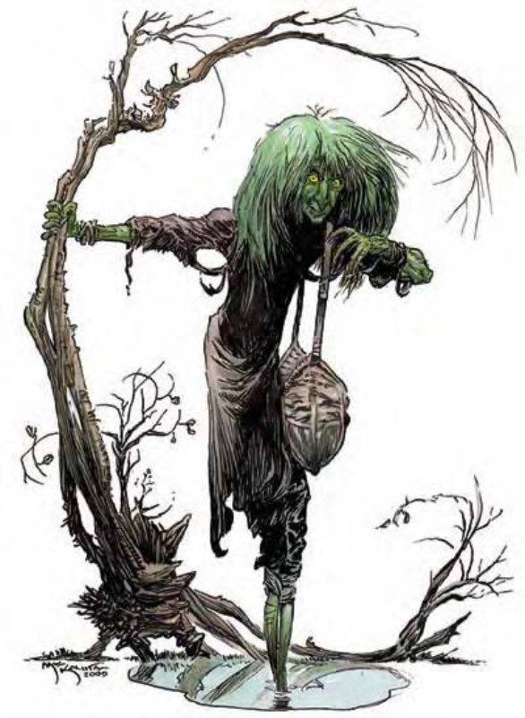

鬼婆是一种可怕的生物，邪恶程度一如其丑恶的相貌。
虽然鬼婆常为了权力或邪恶的目的策划阴谋，她也会为了自己的利益作恶。虽然她们会用黑暗魔法与对邪恶事物的知识侍奉强大的邪恶生物，却不具忠诚。若她们发现有机会可以夺权，则会立刻背叛主人。
虽然不同种类的鬼婆各有独特的外貌与习性，她们仍有一些共通点。所有鬼婆都以疣瘿老妇的模样来掩饰其强大的力量与灵活度，虽然容颜皱纹满布，却有着残酷的表情与闪着恶意与狡猾的眼神。鬼婆的长指甲坚硬如钢铁，利如锋刃。
鬼婆通晓巨人语与通用语。
战斗鬼婆非常强壮。她们天生具有法术抗力，但可以对自己使用魔法。鬼婆常会聚集形成巫婆会，其中包含了各种类的鬼婆，聚集起来的力量远比单打独斗大。
| 资料栏位 | 妖鬼婆 (Annis) 大型人形怪物 |
| 生命骰 | 7d8+14 (45HP) |
| 先攻 | +1 |
| 速度 | 40英尺 (8格) |
| 防御等级 | 20 (-1体型、+1敏捷、+10天生)、接触10、措手不及19 |
| 基本攻击/擒抱 | +7 / +18 |
| 攻击 | 爪抓+13近战 (1d6+7) |
| 全力攻击 | 2爪抓+13近战 (1d6+7) 及 啮咬+8近战 (1d6+3) |
| 占据/触及 | 10英尺 / 10英尺 |
| 特殊攻击 | 精通擒抱、耙抓1d6+7、撕扯2d6+10、类法术能力 |
| 特殊能力 | 伤害减免2 / 敲击、黑暗视觉60英尺、法术抗力19 |
| 豁免 | 强韧+6、反射+6、意志+6 |
| 属性 | 力量25、敏捷12、体质14、智力13、感知13、魅力10 |
| 技能 | 唬骗+8、交涉+2、易容+0 (扮演+2)、躲藏+5、威吓+2、聆听+10、侦察+10 |
| 专长 | 警觉、盲战、强韧加强 |
| 环境 | 寒冷带沼泽 |
| 组织 | 单独或巫婆会 (3个任意种类的鬼婆，加上1-8个食人魔与1-4个邪恶巨人) |
| 挑战级数 | 6 |
| 宝藏 | 标准 |
| 阵营 | 通常混乱邪恶 |
| 进化 | 视人物职业而定 |
| 等级修正值 | ― |
这种生物看似一个非常年老的人类女性，身材却高的不正常。她的皮肤呈深蓝色，还有一头肮脏的黑发。
妖鬼婆很可能是所有鬼婆里最可怕的一种。妖鬼婆常会使用“魔法易容”让自己看起来像个非常高的人类或正常大小的巨人或食人魔。
妖鬼婆身高8英尺，体重大约有325磅。
战斗 (妖鬼婆)：
虽然妖鬼婆的力气很大，她们并不喜欢直接攻击，而会试着在战斗前分化并困惑对手。她们喜欢乔装成平民或善良老百姓，让受害者松懈警戒或自认为安全无虞，再对其发动攻击。
精通擒抱 (特异)：如果妖鬼婆利用爪抓中大型以下的对手，即可利用即时动作进行擒抱攻击，且不会引发对方借机攻击。
耙抓 (特异)：攻击加值+13近战、伤害1d6+7。妖鬼婆可用双爪攻击被擒住的敌人，不会受到减值。
撕扯 (特异)：如果妖鬼婆的双爪命中同一个对手，就可抓住并撕裂对方身体，自动额外造成2d6+10点伤害。
类法术能力：每天3次――“魔法易容”、“云雾术”。施法者等级8。
| 资料栏位 | 绿鬼婆 (Green Hag) 中型人形怪物 |
| 生命骰 | 9d8+9 (49HP) |
| 先攻 | +1 |
| 速度 | 30英尺 (6格)、游泳30英尺 |
| 防御等级 | 22 (+1敏捷、+11天生)、接触11、措手不及21 |
| 基本攻击/擒抱 | +9 / +13 |
| 攻击 | 爪抓+13近战 (1d4+4) |
| 全力攻击 | 2爪抓+13近战 (1d4+4) |
| 占据/触及 | 5英尺 / 5英尺 |
| 特殊攻击 | 类法术能力、虚弱、拟声 |
| 特殊能力 | 黑暗视觉90英尺、法术抗力18 |
| 豁免 | 强韧+6、反射+7、意志+7 |
| 属性 | 力量19、敏捷12、体质12、智力13、感知13、魅力14 |
| 技能 | 专注+7、手艺或知识 (任一) +7、躲藏+9、聆听+11、侦察+11、游泳+12 |
| 专长 | 警觉、盲战、战斗施法、强韧加强 |
| 环境 | 温带沼泽 |
| 组织 | 单独或巫婆会 (3个任意种类的鬼婆，加上1-8个食人魔与1-4个邪恶巨人) |
| 挑战级数 | 5 |
| 宝藏 | 标准 |
| 阵营 | 通常混乱邪恶 |
| 进化 | 视人物职业而定 |
| 等级修正值 | ― |
这种生物看起来像个非常老的女性人类。她的皮肤为病态的惨绿色，还有一头深色、纠结扭曲如藤蔓的头发。
绿鬼婆出没于荒凉沼泽或黑暗森林。
绿鬼婆的身高体重与女性人类大致相同。
战斗 (绿鬼婆)：
绿鬼婆偏好先让敌人分心，再由藏身处发动攻击。她们通常会在没有月光的夜晚里，利用黑暗视觉优势发动攻击。
类法术能力：随意施展――“舞光术”、“魔法易容”、“幻音术” (DC=12)、“隐形”、“行动无踪”、“巧言术”、“水中呼吸法”。施法者等级9。豁免检定DC的调整值与魅力调整值相同。
虚弱 (超自然)：绿鬼婆可通过特殊的接触攻击弱化敌人。对手必须通过强韧检定 (DC=16)，失败则造成2d4点力量伤害。豁免检定DC的调整值与魅力调整值相同。
拟声 (特异)：绿鬼婆能模仿任何其巢穴附近的动物叫声。
技能：绿鬼婆在进行任何特殊动作或闪身避祸时，“游泳”检定具有+8种族加值。即使分心或受困，她们在进行“游泳”检定时都可以随时取10。若以直线前进，则可在游泳时进行奔跑动作。
| 资料栏位 | 海鬼婆 (Sea Hag) 中型人形怪物 (水生) |
| 生命骰 | 3d8+6 (19HP) |
| 先攻 | +1 |
| 速度 | 30英尺 (6格)、游泳40英尺 |
| 防御等级 | 14 (+1敏捷、+3天生)、接触11、措手不及13 |
| 基本攻击/擒抱 | +3 / +7 |
| 攻击 | 爪抓+7近战 (1d4+4) |
| 全力攻击 | 2爪抓+7近战 (1d4+4) |
| 占据/触及 | 5英尺 / 5英尺 |
| 特殊攻击 | 狰狞面容、邪眼 |
| 特殊能力 | 两栖、法术抗力14 |
| 豁免 | 强韧+2、反射+4、意志+4 |
| 属性 | 力量19、敏捷12、体质12、智力10、感知13、魅力14 |
| 技能 | 手艺或知识 (任一) +3、躲藏+4、聆听+6、侦察+6、游泳+12 |
| 专长 | 警觉、健壮 |
| 环境 | 温带水域 |
| 组织 | 单独或巫婆会 (3个任意种类的鬼婆，加上1-8个食人魔与1-4个邪恶巨人) |
| 挑战级数 | 4 |
| 宝藏 | 标准 |
| 阵营 | 通常混乱邪恶 |
| 进化 | 视人物职业而定 |
| 等级修正值 | ― |
这种生物看起来像个年老的人类女性。她的皮肤呈病态的蜡黄色，布满疣疮与脓疮。她那一头长而肮脏的头发像是腐烂的海草。
出没于大海或水草蔓生的湖中，海鬼婆可能是所有鬼婆里最丑陋的一种。
海鬼婆的身高体重与女性人类大致相同。
战斗 (海鬼婆)：
海鬼婆并不工于心计，偏好直接进入战斗。她们会先躲起来，等到能用狰狞面容影响到最多敌人时再突然出现。
狰狞面容 (超自然)：除非是同类，否则见到海鬼婆对任何人来说都是很可怕的经历，见到时必须进行强韧检定 (DC=13)，失败则立刻虚弱无力，受到2d4点力量伤害。这种伤害无法将受害者的力量值降到0以下，但力量0的人物视为无助状态。通过强韧检定的人物在24小时内不会再被同一个鬼婆的尊容吓到。豁免检定DC的调整值与魅力调整值相同。
邪眼 (超自然)：每3次，海鬼婆可以对30英尺内的单一生物投以恐怖的凝视，该生物必须进行意志检定 (DC=13)，失败则晕眩三日，使用“移除诅咒”或“反制邪恶”可以让晕眩生物较快恢复神智。除此之外，受影响生物必须进行强韧检定 (DC=13)，失败则会因惊吓而死。对恐惧免疫的生物不受海鬼婆的邪眼影响。豁免检定DC的调整值与魅力调整值相同。
两栖 (特异)：虽然海鬼婆为水生亚种，但当然也可以在陆上呼吸。
有时三个鬼婆会组成巫婆会。通常这邪恶的三位一体中包含三种不同的鬼婆，但也有例外。
战斗 (巫会)：
巫婆会中的鬼婆仰赖骗术与强化后的魔法能力作战。
鬼婆巫会有80%的机率找来1d8个食人魔或1d4个邪恶巨人担任守卫。这些爪牙常会被施以“迷罩”法术，使之看起来不具威胁性后派遣为间谍。爪牙们也经常（约60%）携带一种叫做“鬼婆眼”的魔法石（参见下文）。
类法术能力：每天3次――“操纵死尸”、“降咒” (DC=17)、“操控天气”、“托梦法”、“魔力监牢”、“心灵屏障”、“海市蜃楼” (DC=18)、“迷罩” (DC=19)、“灵视”。施法者等级9。豁免检定DC的调整值与魅力16时的调整值相同。三个鬼婆都必须参与，且相距不可超过10英尺，才能使用这些能力（此为整轮动作）。
每月1次，没有鬼婆眼的团体可以用价值20金币以上的宝石做一个（参见下文）。
鬼婆眼是一种由巫婆会制造的魔法宝石。虽然看起来只是一颗半宝石，但使用“真知宝石”或有类似功能的装置时，会发现这是一颗脱离本体的眼睛。鬼婆眼通常会以戒指、别针或其它装饰品的形态佩带在身上。只要鬼婆眼与制造它的三鬼婆位于同一界域，三鬼婆随时都可以透过鬼婆眼来看东西。鬼婆眼的硬度5，生命值10点。毁灭鬼婆眼将造成所有同巫婆会的鬼婆受到1d10点伤害，受伤最重的成员还将目盲24小时。